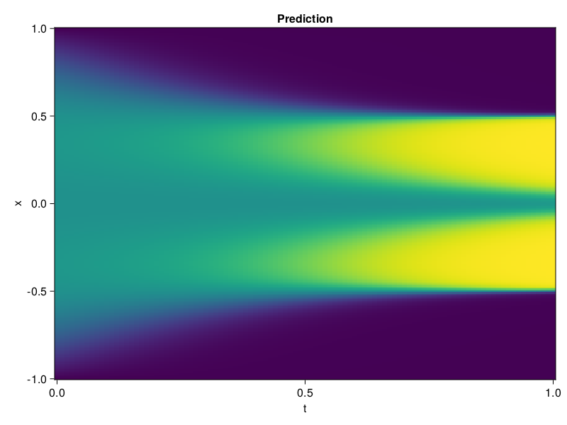

Allen-Cahn Equation with Sequential Training
In this tutorial we are going to solve the Allen-Cahn equation with periodic boundary condition from $t=0$ to $t=1$. The traning process is split into four stages, namely $t\in [0,0.25]$, $t\in [0.0,0.5]$, $t\in [0.0,0.75]$ and $t\in [0.0, 1.0]$.
using ModelingToolkit, IntervalSets
using Sophon
using Optimization, OptimizationOptimJL
@parameters t, x
@variables u(..)
Dₓ = Differential(x)
Dₓ² = Differential(x)^2
Dₜ = Differential(t)
eq = Dₜ(u(x, t)) - 0.0001 * Dₓ²(u(x, t)) + 5 * u(x,t) * (abs2(u(x,t)) - 1.0) ~ 0.0
domain = [x ∈ -1.0..1.0, t ∈ 0.0..0.25]
bcs = [u(x,0) ~ x^2 * cospi(x),
u(-1,t) ~ u(1,t)]
@named allen = PDESystem(eq, bcs, domain, [x, t], [u(x, t)])\[ \begin{align} - 0.0001 \frac{\mathrm{d}}{\mathrm{d}x} \frac{\mathrm{d}}{\mathrm{d}x} u\left( x, t \right) + 5 \left( -1 + \left|u\left( x, t \right)\right|^{2} \right) u\left( x, t \right) + \frac{\mathrm{d}}{\mathrm{d}t} u\left( x, t \right) =& 0 \end{align} \]
Then we define the neural net, the sampler, and the training strategy.
chain = FullyConnected(2, 1, tanh; hidden_dims=16, num_layers=4)
pinn = PINN(chain)
sampler = QuasiRandomSampler(500, (300, 100))
strategy = NonAdaptiveTraining(1, (50, 1))
prob = Sophon.discretize(allen, pinn, sampler, strategy)OptimizationProblem. In-place: true
u0: ComponentVector{Float64}(layer_1 = (weight = [0.08546750247478485 0.524241030216217; 1.151484727859497 -0.1925996094942093; … ; -0.5041330456733704 -1.4903838634490967; -1.9768613576889038 1.010977864265442], bias = [0.0; 0.0; … ; 0.0; 0.0;;]), layer_2 = (weight = [-0.5583390593528748 -0.5851835012435913 … -0.6290457248687744 -0.058003731071949005; 0.6593054533004761 0.21681903302669525 … -0.44678381085395813 -0.41903921961784363; … ; -0.47502636909484863 0.6911242604255676 … 0.40928250551223755 -0.40036651492118835; -0.08000440895557404 -0.1331532746553421 … 0.42068612575531006 -0.1127704307436943], bias = [0.0; 0.0; … ; 0.0; 0.0;;]), layer_3 = (weight = [0.5111964344978333 0.38932913541793823 … -0.6971719861030579 -0.5170417428016663; 0.16737014055252075 0.49629464745521545 … -0.3537571132183075 -0.6735919117927551; … ; -0.3199036419391632 0.41636723279953003 … -0.63190758228302 0.6552806496620178; 0.7020615339279175 0.196177139878273 … 0.09835398197174072 0.22597308456897736], bias = [0.0; 0.0; … ; 0.0; 0.0;;]), layer_4 = (weight = [0.5875672698020935 0.0455692857503891 … -0.07817193120718002 -0.05402467027306557; 0.3003910183906555 0.5030909776687622 … 0.007211364805698395 0.4194214642047882; … ; 0.2510313391685486 -0.7021613121032715 … -0.011311731301248074 0.7134702801704407; -0.2988506853580475 -0.4102916717529297 … 0.21417930722236633 -0.13644391298294067], bias = [0.0; 0.0; … ; 0.0; 0.0;;]), layer_5 = (weight = [0.09960900992155075 0.0704689770936966 … 0.640367329120636 -0.6635079383850098], bias = [0.0;;]))We solve the equation sequentially in time.
function train(allen, prob, sampler, strategy)
bfgs = BFGS()
res = Optimization.solve(prob, bfgs; maxiters=2000)
for tmax in [0.5, 0.75, 1.0]
allen.domain[2] = t ∈ 0.0..tmax
data = Sophon.sample(allen, sampler)
prob = remake(prob; u0=res.u, p=data)
res = Optimization.solve(prob, bfgs; maxiters=2000)
end
return res
end
res = train(allen, prob, sampler, strategy)u: ComponentVector{Float64}(layer_1 = (weight = [-0.22091266925514091 0.5968449020265859; 1.3083381413887234 -0.24723946099033314; … ; -0.39033225943603356 -0.3176373523790295; -1.3977179375762157 0.987617101890122], bias = [0.04839651381728335; 0.5796260782755622; … ; 0.12161550742867479; -1.5922053811092163;;]), layer_2 = (weight = [-0.7311861360922007 -0.6438600499144879 … -0.6139092408299626 0.302136545189372; 0.6084472862828277 0.28509076477843526 … -0.3093487694976661 -0.3179192464932114; … ; -0.6668024521906522 0.73630570239253 … 0.36028880019887416 -0.3784604486930731; -0.1510773587953972 -0.2489734012930974 … 0.5483880706025444 -0.34551472040569836], bias = [-0.6481785074805548; -0.3270505279932582; … ; -0.42658382224107416; -0.3218354325783369;;]), layer_3 = (weight = [0.7592547225916172 0.0914811779547703 … -1.0267601828322892 -0.6635381664249377; 0.19840602845890462 0.331509717781759 … -0.21960299670950215 -0.5610024620020965; … ; -0.5185845044575306 0.5236430698994963 … -0.055050446768801095 0.7999716728025087; 0.46134955144218404 0.5146061663961027 … 0.24725759391760094 0.3052151287792865], bias = [0.09539014938264083; -0.34456712723709554; … ; 0.302635424804035; -0.1757084788354728;;]), layer_4 = (weight = [0.5889429850562936 0.17909986473565603 … -0.2560483425169636 0.30991006285326556; 0.22999512562811153 0.28932191025241955 … 0.4305233248719813 0.3804922627687988; … ; 0.1448115880970339 -0.6491384776209062 … -0.7788069997450172 0.9227390352447195; -0.0011071392154662072 -0.16512247365076263 … 0.16714487482500445 -0.1006326419163081], bias = [-0.1470576543951527; 0.37273211531890477; … ; -0.11075711029350438; 0.2656436832275857;;]), layer_5 = (weight = [0.039718371636076714 0.16654517358319432 … 0.5155038749555287 -0.07298867272675516], bias = [-1.165869444538332;;]))Let's plot the result.
using CairoMakie
phi = pinn.phi
xs, ts = [infimum(d.domain):0.01:supremum(d.domain) for d in allen.domain]
axis = (xlabel="t", ylabel="x", title="Prediction")
u_pred = [sum(pinn.phi([x, t], res.u)) for x in xs, t in ts]
fig, ax, hm = heatmap(ts, xs, u_pred', axis=axis)